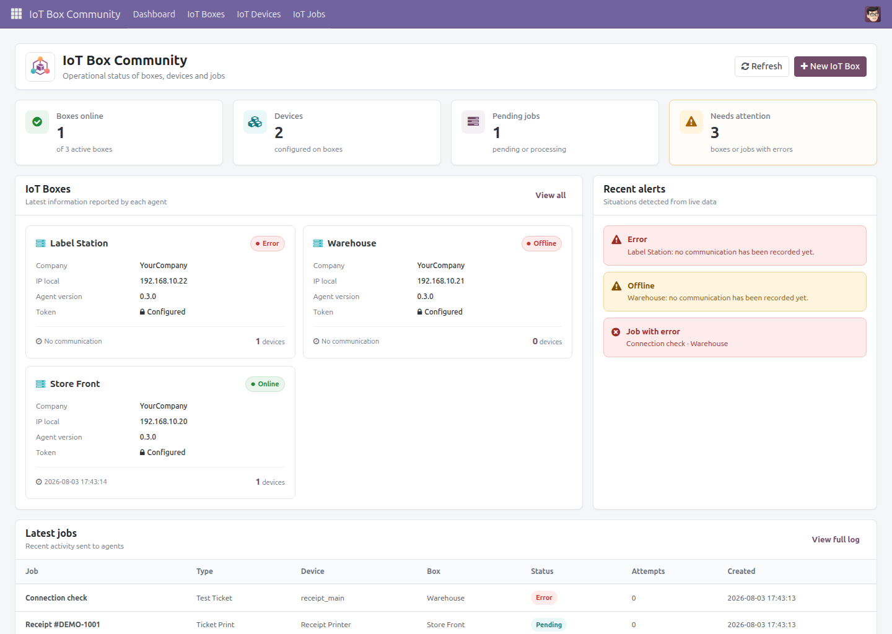

IoT Box Community
Community IoT backend for Odoo 17 by JDA Solutions
Manage IoT boxes, devices and print jobs in Odoo 17 Community using an external Python agent running on Windows or Linux.

Manage IoT boxes, devices and print jobs in Odoo 17 Community using an external Python agent running on Windows or Linux.

/iot/api/v1/register - Agent registration
/iot/api/v1/heartbeat - Box heartbeat and online status
/iot/api/v1/jobs/poll - Job polling
/iot/api/v1/jobs/result - Job result reporting
/iot/api/v1/config - Configuration fetch
/iot/api/v1/devices/sync - Automatic device synchronization
This repository contains the Odoo module only. The external IoT agent is deployed separately and communicates with Odoo through outgoing HTTP requests.